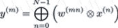

| Class vmap |
|
| dLabPro | Identifier | : | vmap |
|
| Base class | : | - |
||
| Properties | : | CS_AUTOACTIVATE | ||
| Default Instance | : | |||
| Compatibility | : | dLabPro |
||
| C/C++ | Wrapper Class | : |
typedef struct CVmap |
|
| Compatibility | : | ANSI-C, ANSI C++ | ||
| General | Author | : | Christian-M. Westendorf, Matthias Wolff | |
| Version | : | 1.0.0 | ||
Synopsis
Vector mapping operator
Description
Instances of the vmap class transform N-dimensional "input" vectors into M-dimensional
"output" vectors. The transformation is done through a generalized matrix product. Let x =
 (1)
over an arbitrary semiring {R,  ,
,  , 0, 1} with
, 0, 1} with
| R | : | The set of real numbers including ±∞ |
| : | An "aggregation" operation | |
| : | A "weighting" operation | |
| 0 | : | The neutral element 0 of the aggregation
operation such that a |
| 1 | : | The neutral element 1 of the weighting
operation such that a |
The operators  and
and  along with their neutral elements 0 and 1 have to be defined
through the
along with their neutral elements 0 and 1 have to be defined
through the -setup or -setup_i methods. The vector transformation operation (1) is executed by the
-map method.
Remarks
vmapdoes not care whether the algebraic structure {R, ,
,  , 0, 1} is actually a semiring or whether it even makes any sense at all. The
vector transformation according to equation (1) will be done in all cases, free of any intelligence.
, 0, 1} is actually a semiring or whether it even makes any sense at all. The
vector transformation according to equation (1) will be done in all cases, free of any intelligence.- When evaluating formula (1)
vmapwill skip summands whose weight is 0 (this is useful for algebraic structures which are no semirings; see fieldzerofor details). - The computation is done in the exact order specified in equation (1). You should consider this if one or both of
the operations or are not commutative!
Example
The following example demonstrates some simple vector mapping:
data idImap; # Index map data idWtab; # Weight table data idX; # Input vector sequence data idY; # Output vector sequence vmap iMap; # Vector mapping operator -type short 1 7 idImap -array { 1 0 0 2 1 2 2 }; # Make index map -type double 1 7 idWtab -array { ${1/3} 0.75 0.25 0.10 ${2/3} 0.70 0.20 }; # Make weight table -type double 7 2 idX -array # Make a test vector sequence { # | 1 1 1 1 1 1 1 # | 3 ${4/3} 4 10 1.5 ${10/7} 5 # | }; # | idImap NULL "add" "mult" 0. 1. iMap-setup_i; # Setup unweighted summing operator iMap-status; iMap.tmx-print; # Print setup idX idY iMap-map; # Transform idX -> idY idY -print; # Print idY; should be # ( (2 2 3) (5.33333 4.5 16.4286) ) idImap idWtab "add" "mult" 0. 1. iMap-setup_i; # Setup prob. semiring aggr. operator iMap-status; iMap.tmx-print; # Print setup idX idY iMap-map; # Transform idX -> idY idY -print; # Print idY; should be # ( (1 1 1) (2 2 3) )
See also
Transformation matrix w
|
|
Aggregation operation
|
|
Weighting operation
|
|
Neutral element 0 of the aggregation operation
|
Class Members
| Fields | Home Top Fields Options Methods C/C++ Errors |
aop | Aggregation operation (scalar operation code) |
tmx | The vector transformation matrix |
type | Floating point type code for calculations. |
weak_thrsh | Precentage threshold for usage of weak used matrix algorithm |
weak_tmx | Vector transformation informations for weak tmx matrix |
wop | Weighting operation (scalar operation code) |
zero | Neutral element of aggregation operation |
| Options | Home Top Fields Options Methods C/C++ Errors |
/double | Use double precision floating point numbers. |
/float | Use single precision floating point numbers. |
| Methods | Home Top Fields Options Methods C/C++ Errors |
-map | <data idSrc> <data idDst> <vmap this> -map Transform vectors. |
-setup | <data idTmx> <string sAop> <string sWop> <double nZero> <vmap this> -setup Setup with vector transformation matrix. |
-setup_i | <data idImap> <data idWtab> <string sAop> <string sWop> <double nZero> <double nOne> <vmap this> -setup_i Setup with index map and weight table. |
-status | <vmap this> -status Prints status information of the vector mapping operator. |
| C/C++ API | Home Top Fields Options Methods C/C++ Errors |
| (see method list for additional C/C++ functions) | |
CTmx_IsCompressed | INT16 CVmap_CTmx_IsCompressed(CVmap _this, CData* idTmx); |
CVmap_GetInDim | INT32 CVmap_GetInDim(CVmap _this);Returns the input dimensionality of this mapping operator. |
CVmap_GetOutDim | INT32 CVmap_GetOutDim(CVmap _this);Returns the output dimensionality of this mapping operator. |
CVmap_MapVector | void CVmap_MapVector(CVmap _this, BYTE* lpX, BYTE* lpY, INT32 nXdim, INT32 nYdim, INT16 nFtype);Transforms one vector. |
| Errors | Home Top Fields Options Methods C/C++ Errors |
vmap1001 | '%s' is not a valid %s operation name. |
vmap1002 | Mapping operator not properly set up%s. |